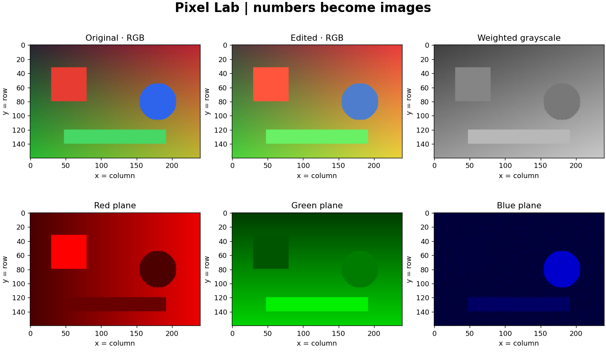
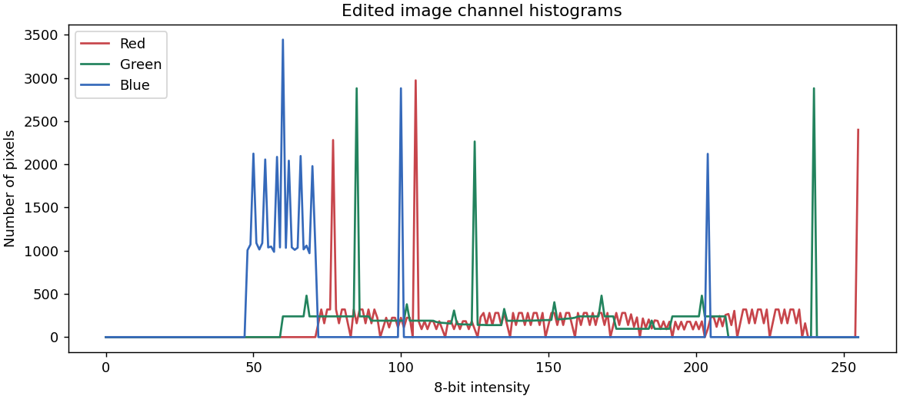

Chapter 01 · Computer Vision — Zero to Advanced
Source: synthetic scene. Crop → brightness → channel gains. Each stage clips to 0–255.


Each color histogram counts one observation per pixel. Counts are not probabilities.
Configuration, image statistics and runtime versions · Edited PNG
This is a pixel transformation experiment. It reports no classification accuracy or model performance.